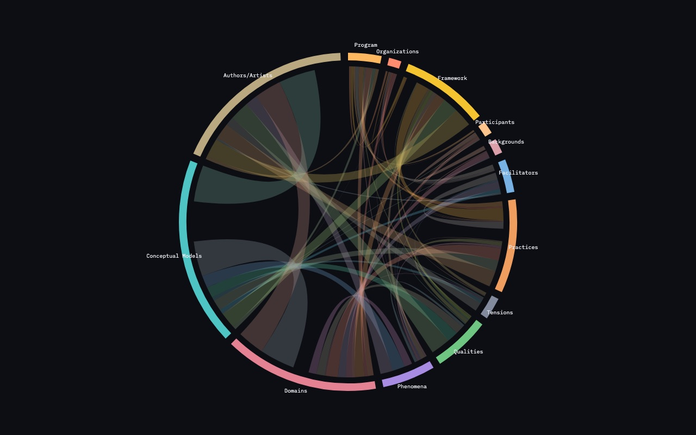
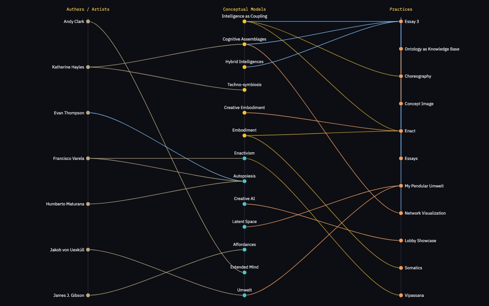
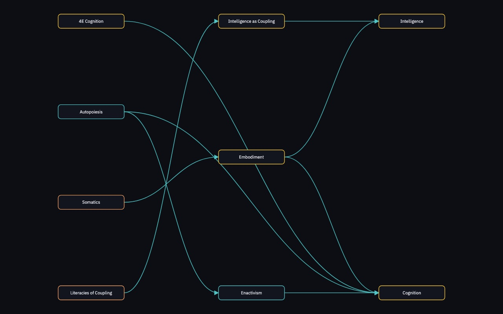
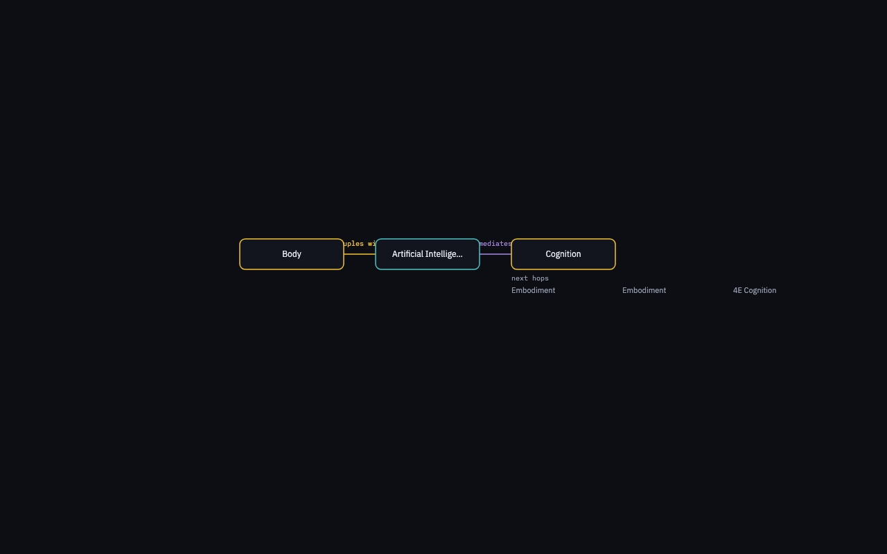

Network
What is near what. Concepts sit on concentric rings by category; edge thickness is weighted relatedness. Isolate a ring or a typed verb. This is the map the other views start from.

Ring chord
Which categories couple with which? Thirteen arcs; ribbon volume is relatedTo between rings. The node graph is soup; this 13×13 map is readable.

Hive
Authors, conceptual models, and practices on three axes. A trail such as Maturana → Autopoiesis → Enactivism becomes a line, not a highlight in the soup.

Layered DAG
Pick enables, emerges from, constrains, or any other typed verb. Sources sit left of what they act on. Direction becomes visible.

Path walker
Walk a coupling: Body couples with AI; AI mediates Cognition. Pedagogical, not a map. Same sentences Voice already speaks.